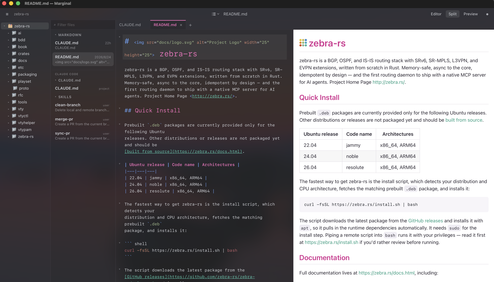
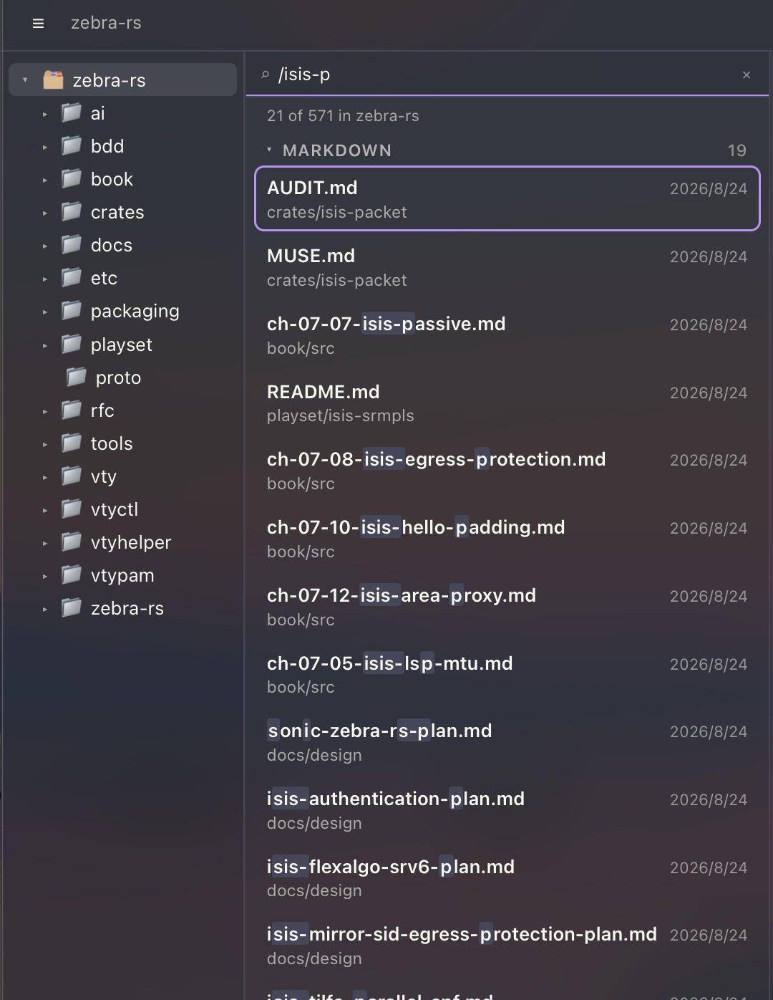
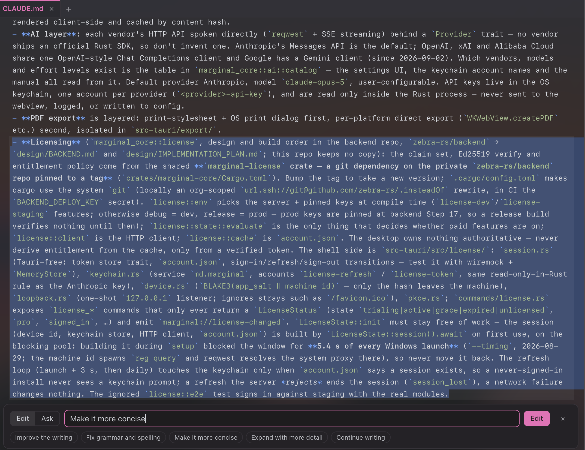
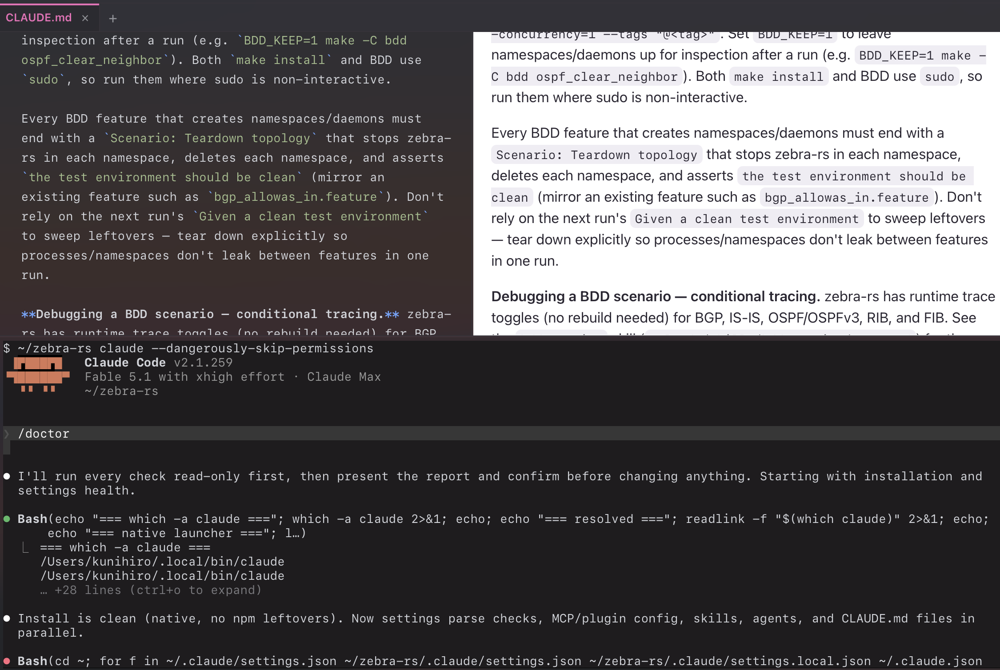

Blog
Markdown Editors Weren't Built for Coding Agents, So I Made One

Like many engineers, I use coding agents heavily every day, mainly Claude Code. They are amazing tools for expanding what an engineer can do. I can no longer imagine doing my development work without them.
These days I have coding agents write dev plans, run security audits, generate BDD test cases, and more. For each plan and audit, I have the agent write down the plan or the audit results in markdown. On top of that, I periodically maintain CLAUDE.md and try out other engineers' amazing skills. As a result, I now have an overwhelming number of markdown documents, sometimes more than 100, scattered across different subdirectories.
Worse, I've completely lost track of which skills are currently available, which sub-agents are installed, and which rules are in effect. Some are project-local; some are shared across my account on a specific machine. I also occasionally try other coding agents like Codex and OpenCode, and each of them searches different paths.
Editing SKILL.md files brings another problem: they use a special markdown format with YAML front matter containing mandatory fields such as name and description. I want an editor that understands this structure and highlights it properly.
So I went looking for a markdown editor that understands coding-agent culture, one that can find the currently effective skills, rules, and commands for whichever coding agent I'm using.
Unfortunately, I couldn't find anything that met these requirements. Today's markdown editors work perfectly for note-taking or getting things done, but not for coding agents.
So I decided to build one. Here are the features I've implemented. I hope you like them too.
1.Automatic discovery of your coding agent's skills, rules, and commands
Of course, this is the number one feature I needed. Based on the selected coding agent (Claude Code by default), Marginal automatically finds the currently effective CLAUDE.md or AGENTS.md, along with the skills, rules, sub-agents, and commands, and lists them in the sidebar. You no longer lose track of which ones are in effect for the current project.

2.Finding markdown files in subdirectories
This is an opt-in feature, but if you have a lot of markdown files under subdirectories, you will probably want it. Turn on "List files in subfolders" in Settings, and the list shows every markdown file under the selected directory.
In the filter box at the top of the list, you can type part of a file's path, including / to match a directory, to narrow down the file you need. Go to File (⌘T) does the same thing to open a file directly.

3.Two AI interfaces
The first one is inside the editor. Select some text, press ⌘K, and tell the AI what to do with it. The rewrite streams in as an inline diff, and you accept or reject it as a single undo step. It runs on your own API key, and you pick the provider and model in Settings: Anthropic, OpenAI, Google, xAI, or Alibaba Cloud.

The second one is the coding agent in the terminal, as usual. ⌘J opens a terminal panel below the editor, so you can run claude or codex right there. When the agent writes to a file you have open, Marginal notices and offers to reload it, and a new skill it saves appears in the SKILLS section without reopening the folder.

4.Read & export
Double-click a markdown file in the Finder and Marginal opens it in reading mode, which shows only the preview pane so you can focus on reading. From there you can export the file directly as PDF or HTML. Press Esc to return to the normal editing mode.

5.Emacs/Vim editing modes with custom key mapping
The editing mode can be set to Default, Emacs, or Vim, and the status bar shows which one is on. Yes, I'm an Emacs guy, so I need Ctrl-S "readme" Ctrl-S Ctrl-S Ctrl-G to land on the third occurrence of "readme". Vim users get /, ?, n, and N the way they expect, with the Vim mode shown in the status bar as well.
6.Dark mode and themes, including your own
Like any modern application, Marginal supports dark mode. Ten themes are built in, in five light/dark pairs: Marginal, GitHub, Solarized, Zenburn, and Dracula. A theme is a single JSON file, so you can install your own custom theme, and Marginal loads it on the fly without a restart.
One last thing
Marginal was built the way it is meant to be used: with Claude Code, plan files, rules, and skills in the repository, edited in Marginal itself once it could open them. It runs on macOS, Windows, and Linux, and you can download it from marginal.md. The manual is at marginal.md/docs. Editing needs a subscription after the trial; the AI features run on your own API key and are never gated. If your coding agent keeps its files somewhere Marginal doesn't look yet, tell me, and it becomes a row in a table.
Marginal is $10 a month or $96 a year, with a 14-day trial and no card. Pricing · Download